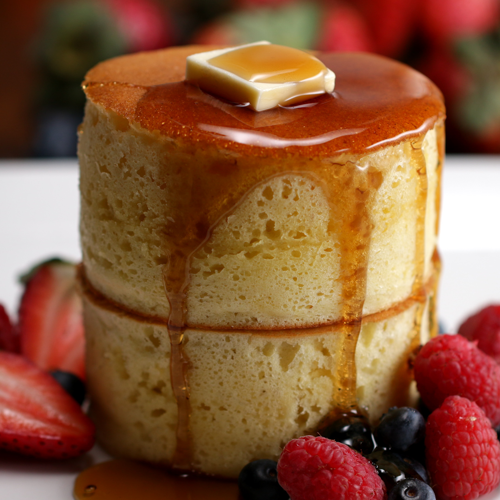

Japanese Pancakes

Description
Fluffy Japanese Pancakes are a soft, airy cotton candy-like pancake dream come true. Dress them up in whipped cream, rain down the maple syrup, or try out the tiramisu topping recipe I provide – they come out delicious every which way!
What Makes Japanese Pancakes Different
There are two secrets to making these lofty pancakes. First, by separating the egg whites and whipping them into a meringue, it gives the batter an airy souffle-like texture that allows your pancakes to get some serious height. The second secret is in steaming them to ensure all the height you’ve built into your batter cooks through completely while keeping the pancakes nice and moist.
It takes more time to make fluffy Japanese pancakes, but the extra effort is well worth the reward of eating your new favorite breakfast!
Ingredients
- 2 - eggs, separated
- 1 1/2 - cups of all-purpose flour
- 1/4 - cup of white sugar
- 2 - teaspoons baking powder
- 1/2 - teaspoon baking soda
- 1 1/4 - cups buttermilk
- 1/4 - melted butter
- 1/2 - teaspoon vanilla extract
Steps
- Beat egg whites in a glass, metal, or ceramic bowl until stiff peaks form.
- Butter enough 3 1/2 - inch ring molds to fill your frying pan. Place molds in the pan over low heat. Cover.
- Mix flour, sugar, baking powder, and baking soda in a bowl.
- Combine buttermilk, egg yolks, butter, and vanilla extract in a separate bowl. Add the flour mixture and stir until batter is fairly smooth.
- Fold egg whites into the batter until combined. Small bits of egg whites still showing is ok.
- Pour about 1/2 cup of batter into each mold and cover the pan. Cook until bubbles start forming at the top, about 5 minutes. Flip pancakes in their molds and cook until set, 3 to 4 minutes more.
Top Page
Main Page